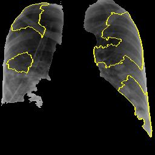
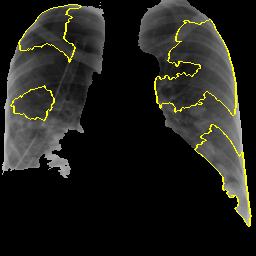
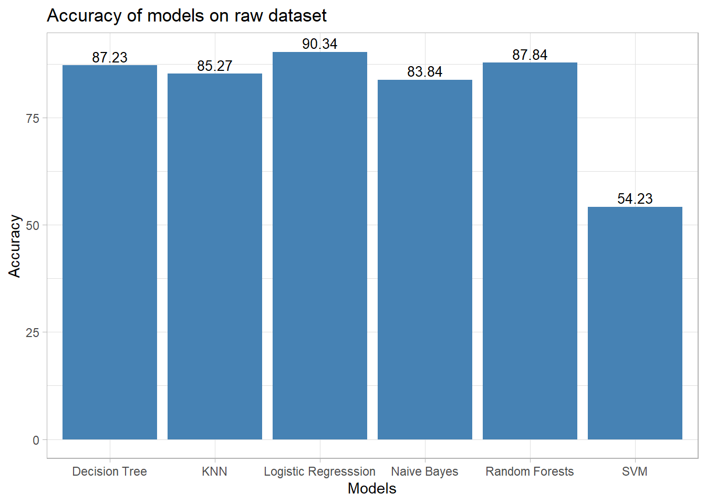

Results
Explanations
Apart from prediction of positive and negative for COVID-19 cases from CXR images, we try providing an explanation of which areas of the image contributes towards the predicted results. Local interpretable model-agnostic explanations (LIME) [1] is a local surrogate model. That is instead of explaining the global prediction, it only explains the local prediction. Therefore once the predictions are available, the LIME model can be run, in hope that, the model finds the areas of the image that contributes most towards the prediction.
Given any(black box/transparent) model, the Lime model probes the model and gets the output any number of time(theoritically). Lime creates a data set consist of permutated samples of the images, and feed those images to the model and tries to predict what happens to the predictions for the permutated samples.
We initially ran our application, while feeding the whole image. However, as expected the areas where the lime model is trying to explain, is outside the intended region. For that reason, we give the model, the masked lungs image as input, while the other parts of the image is black. We thus, force the lime model to do any changes in the model on the intended area. This time, as expected the lime model focuses more on the parts of the lungs and thus gives a better performance.
 

Parameters and settings: As a part of preprocessing of the images to be fed to the lime model, we do greyscaling of the image. While no resizing is done, the image is processed so that the 1 channel greyscaled masked image is fed to the LIME model.
Number of features to find is set to 10.
Only “positive” areas are marked in the explanation image.
Benchmark Evaluation

In accordance to [2], where in the author presented a network for detection of COVID-19 cases using Deep Neural Networks with X-Ray images.The paper presents a detailed comparison study of their network with respect to other models for COVID-19 detection, in terms of accuracy. The details of the data-set used is explained in the following paragraph.
The database was developed by [3] using images from various sources. The database is constantly upgraded, as of now, the database content comprise of around “201” COVID-19 positive X-Ray images.There were no images, which represent X-Ray of normal lungs, hence we have used thousand healthy X-Ray images from our original database as negative class, which we have used to feed our original models.
In the following sections, we present the figures that are obtained by training the models with the same data-set that [2] used in his experiment followed by the comparison table :
Comparison of different models
| Study | Type Of Image | No. Of Cases | Method Used and Settin | Accuracy |
|---|---|---|---|---|
| Sethy and Behra | Chest X-ray | 25 COVID-19(+) 25 COVID-19 (−) | ResNet50+ SVM | 95.38 |
| Hemdan et al. | Chest X-ray | 25 COVID-19(+) 25 Normal | COVIDX-Net | 90.0 |
| Narin et al. | Chest X-ray | 50 COVID-19(+) 50 COVID-19 (−) | Deep CNN ResNet-50 | 98.0 |
| Ying et al. | Chest CT | 777 COVID-19(+) 708 Healthy | DRE-Net | 86.0 |
| Wang et al. | Chest CT | 195 COVID-19(+) 258 COVID-19(−) | M-Inception | 82.9 |
| Zheng et al. | Chest CT | 313 COVID-19(+) 229 COVID-19(−) | UNet+3D Deep Network | 90.8 |
| Our Study | Chest X-ray | 1000 COVID-19(-) 201 COVID-19(+) | Decision Tree with RAW Data | 90.03 |
| Our Study | Chest X-ray | 1000 COVID-19(-) 201 COVID-19(+) | Decision Tree with Oversampled Data | 69.05 |
| Our Study | Chest X-ray | 1000 COVID-19(-) 201 COVID-19(+) | Random Forest with RAW Data | 91.69 |
| Our Study | Chest X-ray | 1000 COVID-19(-) 201 COVID-19(+) | Random Forest with Oversampled Data | 79.17 |
| Our Study | Chest X-ray | 1000 COVID-19(-) 201 COVID-19(+) | kNN with RAW Data | 90.62 |
| Our Study | Chest X-ray | 1000 COVID-19(-) 201 COVID-19(+) | Logistic Regression with RAW Data | 90.34 |
| Our Study | Chest X-ray | 1000 COVID-19(-) 201 COVID-19(+) | Naive Bayes with RAW Data | 87.0 |
| Our Study | Chest X-ray | 1000 COVID-19(-) 201 COVID-19(+) | SVM with Oversampled Data | 54.73 |
Random Forest
# Confusion Matrix and Statistics
#
# Reference
# Prediction 0 1
# 0 245 18
# 1 7 31
#
# Accuracy : 0.9169
# 95% CI : (0.8798, 0.9455)
# No Information Rate : 0.8372
# P-Value [Acc > NIR] : 3.802e-05
#
# Kappa : 0.665
#
# Mcnemar's Test P-Value : 0.0455
#
# Sensitivity : 0.6327
# Specificity : 0.9722
# Pos Pred Value : 0.8158
# Neg Pred Value : 0.9316
# Precision : 0.8158
# Recall : 0.6327
# F1 : 0.7126
# Prevalence : 0.1628
# Detection Rate : 0.1030
# Detection Prevalence : 0.1262
# Balanced Accuracy : 0.8024
#
# 'Positive' Class : 1kNN
# Confusion Matrix and Statistics
#
# Reference
# Prediction 0 1
# 0 283 21
# 1 12 36
#
# Accuracy : 0.9062
# 95% CI : (0.8709, 0.9346)
# No Information Rate : 0.8381
# P-Value [Acc > NIR] : 0.0001493
#
# Kappa : 0.6311
#
# Mcnemar's Test P-Value : 0.1637344
#
# Sensitivity : 0.9593
# Specificity : 0.6316
# Pos Pred Value : 0.9309
# Neg Pred Value : 0.7500
# Prevalence : 0.8381
# Detection Rate : 0.8040
# Detection Prevalence : 0.8636
# Balanced Accuracy : 0.7955
#
# 'Positive' Class : 0Logistic Regression
# Confusion Matrix and Statistics
#
# Reference
# Prediction 0 1
# 0 282 21
# 1 13 36
#
# Accuracy : 0.9034
# 95% CI : (0.8676, 0.9322)
# No Information Rate : 0.8381
# P-Value [Acc > NIR] : 0.0002803
#
# Kappa : 0.6228
#
# Mcnemar's Test P-Value : 0.2299491
#
# Sensitivity : 0.9559
# Specificity : 0.6316
# Pos Pred Value : 0.9307
# Neg Pred Value : 0.7347
# Prevalence : 0.8381
# Detection Rate : 0.8011
# Detection Prevalence : 0.8608
# Balanced Accuracy : 0.7938
#
# 'Positive' Class : 0 Decision Tree
# Confusion Matrix and Statistics
#
# Reference
# Prediction 0 1
# 0 243 21
# 1 9 28
#
# Accuracy : 0.9003
# 95% CI : (0.8608, 0.9317)
# No Information Rate : 0.8372
# P-Value [Acc > NIR] : 0.001154
#
# Kappa : 0.5943
#
# Mcnemar's Test P-Value : 0.044610
#
# Sensitivity : 0.57143
# Specificity : 0.96429
# Pos Pred Value : 0.75676
# Neg Pred Value : 0.92045
# Precision : 0.75676
# Recall : 0.57143
# F1 : 0.65116
# Prevalence : 0.16279
# Detection Rate : 0.09302
# Detection Prevalence : 0.12292
# Balanced Accuracy : 0.76786
#
# 'Positive' Class : 1Naive Bayes
## Confusion Matrix and Statistics
##
## Reference
## Prediction Normal COVID19
## Normal 235 24
## COVID19 15 26
##
## Accuracy : 0.87
## 95% CI : (0.8266, 0.9059)
## No Information Rate : 0.8333
## P-Value [Acc > NIR] : 0.04857
##
## Kappa : 0.4957
##
## Mcnemar's Test P-Value : 0.20018
##
## Sensitivity : 0.52000
## Specificity : 0.94000
## Pos Pred Value : 0.63415
## Neg Pred Value : 0.90734
## Prevalence : 0.16667
## Detection Rate : 0.08667
## Detection Prevalence : 0.13667
## Balanced Accuracy : 0.73000
##
## 'Positive' Class : COVID19
## Support Vector Machine
#
# Confusion Matrix and Statistics
#
# Reference
# Prediction 0 1
# 0 26 0
# 1 307 346
#
# Accuracy : 0.5479
# 95% CI : (0.5096, 0.5858)
# No Information Rate : 0.5096
# P-Value [Acc > NIR] : 0.02506
#
# Kappa : 0.0795
#
# Mcnemar's Test P-Value : < 2e-16
#
# Sensitivity : 1.00000
# Specificity : 0.07808
# Pos Pred Value : 0.52986
# Neg Pred Value : 1.00000
# Prevalence : 0.50957
# Detection Rate : 0.50957
# Detection Prevalence : 0.96171
# Balanced Accuracy : 0.53904
#
# 'Positive' Class : 1Final Analysis
Based on our approach, we initially tried to extract the features out of the CXR images without any segmentation. However, we found that the area of interest i.e., the lung area is a very small segment of the whole image. Hence, the noise around the lung area dominates the outcome of the classification. Moreover, we found that quality of CXR images highly affects the feature vectors. For this reason, we segmented the images to find the area of interest and extract our features on corresponding lung-segment. The results were better in that case. However, we could not deal with quality of images in terms of light exposure.
We tried explaining our prediction using LIME image module. Intially, we tried applying LIME on the whole image. However, the results were not good. All the areas highlighted by LIME were outside of lung-portion. So, we tried applying LIME on segmented image by applying black background on the non-lung area hoping that the LIME super-pixels will ignore the black backgrounded regions. We manually confirmed that any perturbed image outside the lung-segment area doesn’t get a different prediction. However, we partially succeded on this approach where we noticed that only the negative COVID images (False Negatives too) were correctly marked by LIME. However, positive images could not be properly annotated by LIME within the area of interest.
We also applied classification algorithms, on benchmark dataset and compared the performaces of simple intrinsically explainable models we used and found that some of the very simple models such as kNN, Naive Bayes and Random Forest are giving high accuracy. To our astonishment, SVM couldn’t perform well in comparsion to these simpler models.
We proposed to work on an ensemble architecture where we use our simpler models to boost our confidence in prediction. However, such an approach couldn’t give us the kind of robustness we expected. Hence, after seeing results with the ensemble approach, we dropped the idea of ensemble classification.
We found Local Binary Pattern to be a powerful texture based descriptor, where the only justification of its usefulness can be seen when we compare our results with Neural Network based approaches in the benchmark section.
Conclusion
We applied intrinsically explainable models and LIME explainer on CXR images, for COVID detection and explaination. The results obtained by the classifiers were of higher accuracy whereas LIME failed to perform the similarly. We observed that LBP are good dicriminatory feature vectors for CXR images, however we cannot mitigate the effect of luminosity, brightness and quality to the images. These factors add bias to our classifiers.
References
[1] M.T. Ribeiro, S. Singh, C. Guestrin, " Why should i trust you?" Explaining the predictions of any classifier, in: Proceedings of the 22nd Acm Sigkdd International Conference on Knowledge Discovery and Data Mining, 2016: pp. 1135–1144.
[2] T. Ozturk, M. Talo, E.A. Yildirim, U.B. Baloglu, O. Yildirim, U.R. Acharya, Automated detection of covid-19 cases using deep neural networks with x-ray images, Computers in Biology and Medicine. (2020) 103792.
[3] J.P. Cohen, P. Morrison, L. Dao, COVID-19 image data collection, arXiv 2003.11597. (2020). https://github.com/ieee8023/covid-chestxray-dataset.